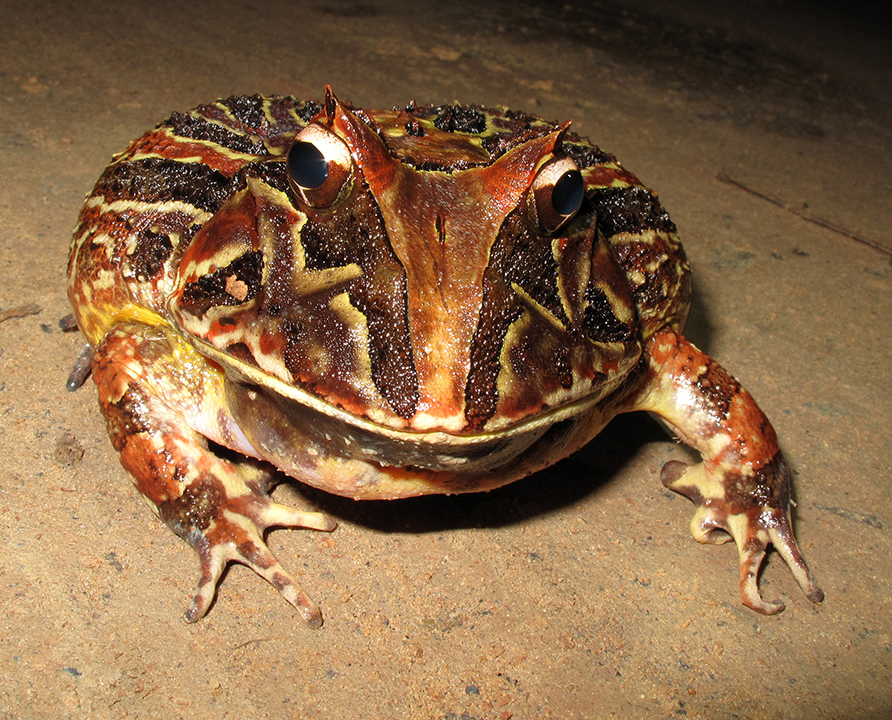
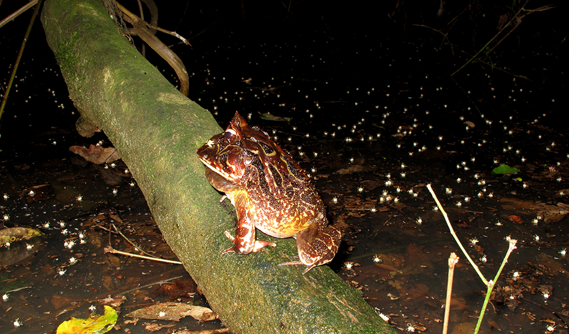

É considerado um sapo de grande porte, chegando a ter mais de 20 cm de comprimento. A pele é verrugosa podendo variar entre o verde, marrom e amarelado com manchas ou ornamentos marrons ou pretos. Tem a boca bastante larga, maior que a largura do abdômen. Possui projeções semelhantes a chifres nas pálpebras, acima dos olhos, sendo conhecido também como sapo-de-chifres. Ocorre da Bahia ao Rio Grande do Sul e é uma espécie bastante rara de ser encontrada na natureza.
Em sua distribuição mais ao sul da Floresta com Araucárias, em Santa Catarina e no Rio Grande do Sul, é considerada uma espécie ameaçada de extinção. Sua reprodução é explosiva, podendo ser encontrada no período de chuvas intensas de outubro e dezembro. No Estado do Paraná, apesar de várias expedições a campo, o último registro dessa espécie na natureza foi feito há mais de 30 anos.
 